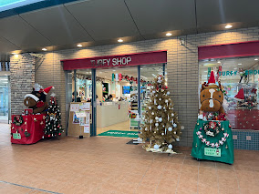
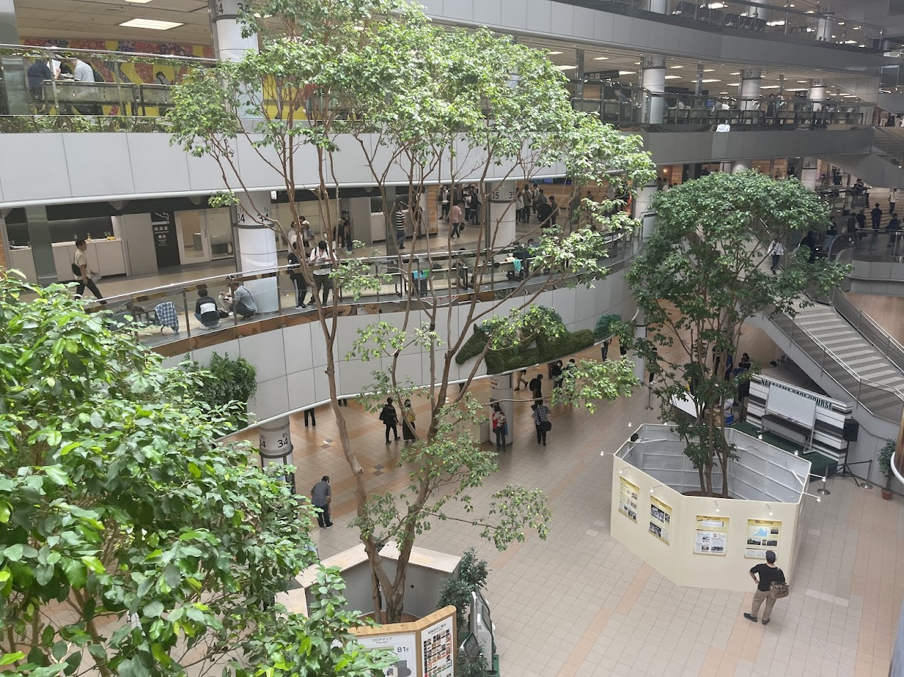
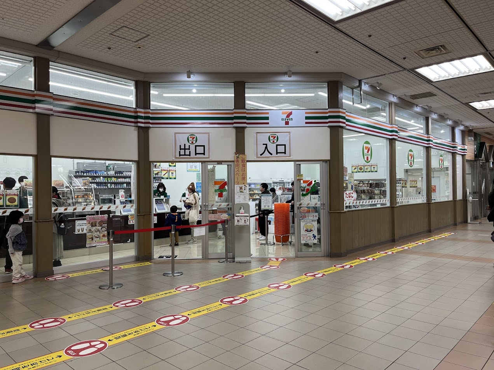
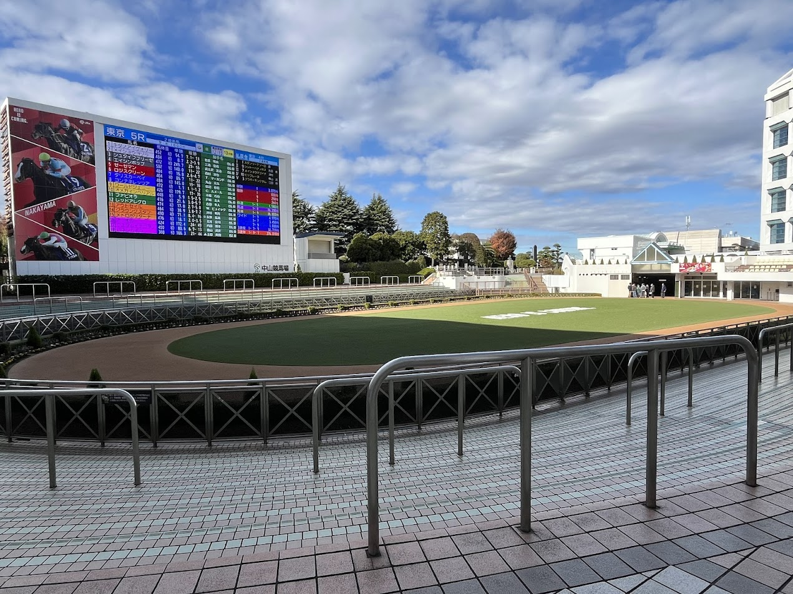
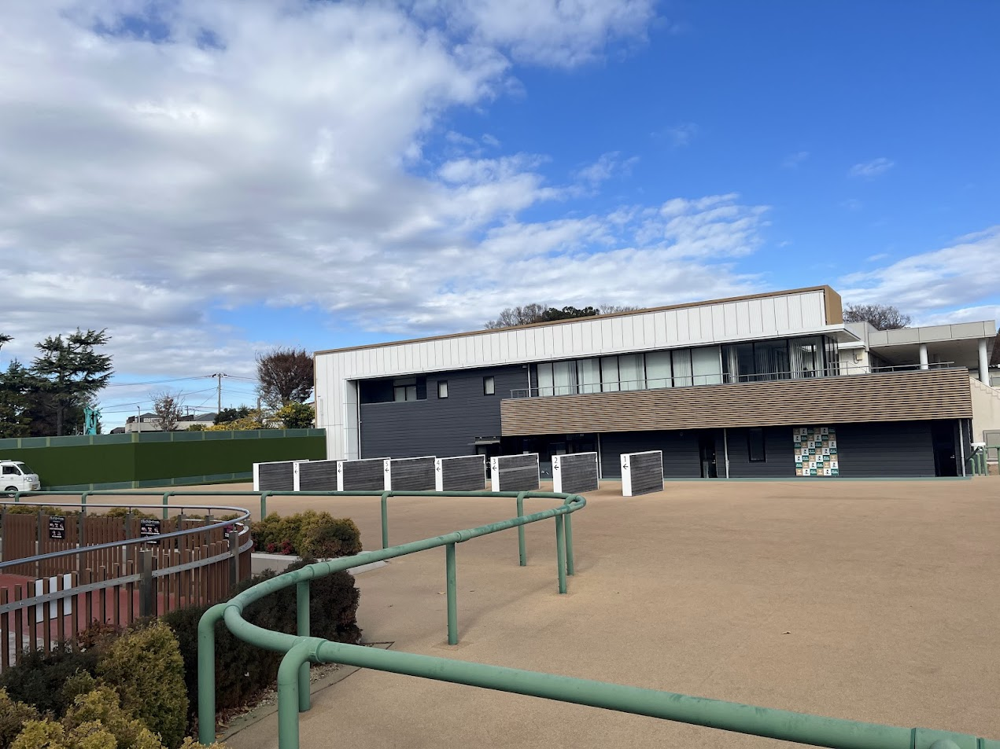
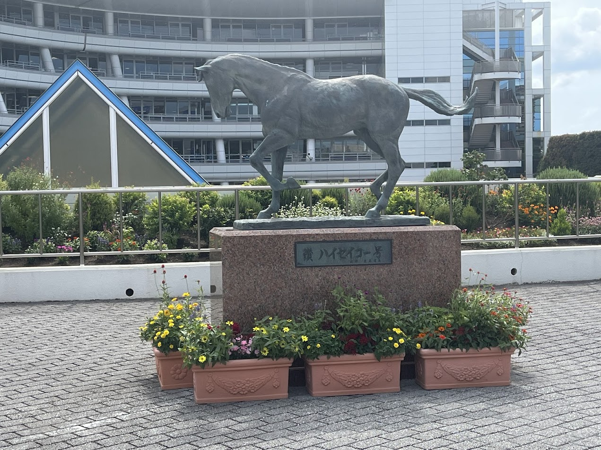

主な施設（中山競馬場）
| ターフィーショップ |
| 
競走馬のぬいぐるみやキーホルダー、Tシャツなどの様々な競馬グッズが販売されているコーナーです。 営業時間：開門～17時00分まで 場所：センターコート店、セレクション店、馬場内店の3店舗 |
| センターコート |
| 
”幸福をもたらす木”として知られるベンジャミンが シンボルの広場です。イベントスペースもございます。 |
| セブンイレブン |
| 
中山競馬場で唯一のコンビニです。町中にあるコンビニと変わらず、食品や飲料だけでなく、便利な日用品なども売っています。 |
| パドック |
|  パドックではレース前の競走馬を間近で見ることができます。 競走馬の気配や発汗などをしっかり確認して馬券の予想に役立てましょう。 |
| グランプリロード(はなみち) |
|  勝負に向かう馬と騎手が、パドックからコースに向かう姿を間近で見れます。 |
| ハイセイコー号馬像 |
|  中山競馬場のパドックと正門との間には名馬ハイセイコーの銅像があります。 |